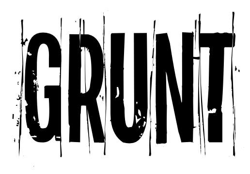

Grassroots US National Tour
ROUND 3 is HERE!
Local dance makers The Space Movement Project, Ashley Fargnoli and J’Sun Howard have teamed up to produce GRUNT Festival Chicago as part of Links Hall’s 40th anniversary season. The 2-weekend event features five visiting artists engaging in the national exchange program, GRUNT (Grass Roots US National Tour). GRUNT seeks to support underrepresented emerging and mid-career artists to build opportunities and resources to tour across the country. For the first time in its three-year history, two weekends of performances will bring together seven local choreographers and visiting artists hailing from New York, Boston and Minneapolis
GRUNT Chicago Festival
April 12-14 & May 10-12
Links Hall 3111 N Western Ave, Chicago, Illinois 60618
Buy April tickets here
Buy May tickets here
Featuring Chicago artists:
Ashley Fargnoli (May)
J'Sun Howard (April)
The Space Movement Project (April & May)
With Visiting Artists:
April 12-14
Molly Hess (New York)
May 10-12
Abilities Dance (Boston)
April Sellers Dance Collective (Minneapolis)
Sarah Weber-Gallo (Hoboken, NJ)
Buy April tickets here
Buy May tickets here